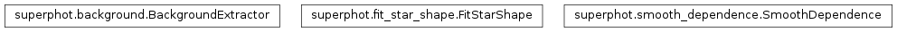
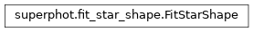

superphot package¶
Class Inheritance Diagram¶
SuperPhot python interface.
-
class
superphot.BackgroundExtractor(image, inner_radius, outer_radius, error_confidence=0.68)[source]¶ Bases:
objectMeasure the background level for each source in an image.
-
image¶ The image being processed.
-
inner_radius¶ The size of the aperture aronud each source within which pixels are excluded from background measurement.
-
outer_radius¶ The outer rim of the aperture around each source within which unrejected pixels are included in the background measurement.
-
error_confidence¶ The confidence level to use for estimating the background error.
-
__call__(source_x, source_y)[source]¶ Measure the background under the sources with the given coordinates.
Parameters: - source_x – The x coordinates of the sources within the image.
- source_y – The y coordinates of the sources within the image.
Returns: - numpy.array:
The estimate of the background under each source in the same order as the input sources.
- numpy.array:
The estimate of the uncertainty in the background under each source in the same order as the input sources.
- numpy.array:
The number of pixels which were used to derive the background and its uncertainty.
Return type:
-
__del__()[source]¶ Destroy the image and extractor created in
__init__().
-
-
class
superphot.FitStarShape(*, mode, shape_terms, grid, initial_aperture, **other_configuration)[source]¶ Bases:
objectFit for the PSF/PRF of stars and their flux.
-
_library_psf_fitter¶ The library object for carrying out PSF/PRF fitting.
-
_library_configuration¶ Library configuration object set per the current
configuration
-
_result_tree¶ The SuperPhotIOTree instance containing the last fittintg results, on None, if no fitting has been performed yet.
-
mode¶ str – Are we doing ‘PSF’ or ‘PRF’ fitting (case insensitive).
-
configuration¶ dict – The configuraiton for how to carry out PSF/PRF fitting. The following keys are used (others are ignored by this class):
- mode (str):
- What kind of fitting to do ‘PSF’ or ‘PRF’ (case insensitive).
- shape_terms (str):
The terms the PSF is allowed to depend on. The EBNF grammar defining the language for this parameter is:
(* items in angle brackets (< or >) are assumed to be *) (* obvious and thus are not defined. *) termchar = <ascii character> - "," - "}" ; (* mathematical expressions involving variables, *) (* floating point numbers and pi. The complete list of *) (* mathematical functions from c++99's cmath library are *) (* supported. *) term = termchar , { termchar } ; (* simple listing of terms to include. *) list = "{" , term , { "," , term } , "}" ; (* Expands to all polynomial terms of up to combined *) (* order <integer> of the entries in list *) poly = "O" , <integer> , list ; set = list | poly ; (* expands to the cross product of all sets. *) cross = set , { "*" , set } ; (* merge the terms of all cross products together. *) expression = cross , { "+" , cross } ;
- grid (list of floats):
- A comma separated list of grid boundaries. Can either be a
single list, in which case it is used for both the horizontal
and vertical boundaries. If different splitting is desired in
the two directions, two lists should be supplied separated by
;. The first list should contain the vertical (x) boundaries and the second list gives the horizontal (y) ones. - initial_aperture (float):
- This aperture is used to derive an initial guess for the amplitudes of sources when fitting for a piecewise bicubic PSF model by doing aperture photometry assuming a perfectly flat PSF.
- subpixmap (2D numpy array):
- The sub-pixel map, for PSF fitting only.
- smoothing (float):
- How much smoothing penalty to impose when fitting the PSF.
Nonefor no smoothing. Value can be both positive and negative and will always result in smoothing (less for negative values). - max_chi2 (float):
- The value of the reduced chi squared above which sources are excluded from the fit. This can indicate non-point sources or sources for which the location is wrong among ohter things.
- pixel_rejection_threshold (float):
- A number defining individual pixels to exclude from the PSF fit. Pixels with fitting residuals (normalized by the standard deviation) bigger than this value are excluded. If zero, no pixels are rejected.
- max_abs_amplitude_change (float):
- The absolute root of sum squares tolerance of the source amplitude changes in order to declare the piecewise bicubic PSF fitting converged.
- max_rel_amplitude_change (float):
- The relative root of sum squares tolerance of the source amplitude changes in order to declare the piecewise bicubic PSF fitting converged.
- min_convergence_rate (float):
- If the rate of convergence falls below this threshold,
iterations are stopped. The rate is calculated as the fractional
decrease in the difference between the amplitude change and the
value when it would stop, as determined by the
max_abs_amplitude_changeandmax_rel_amplitude_changeattributes. - max_iterations (int):
- No more than this number if iterations will be performed. If convergence is not achieved before then, the latest estimates are output and an exception is thrown. A negative value allows infinite iterations. A value of zero, along with an initial guess for the PSF causes only the amplitudes to be fit for PSF fitting photometry with a known PSF. It is an error to pass a value of zero for this option and not specify and initial guess for the PSF.
- gain (float):
- The gain in electrons per ADU to assume for the input images.
- cover_grid (bool):
- If this option is true, all pixels that at least partially overlap with the grid are assigned to the corresponding source. This option is ignored for sdk PSF models.
- src_min_signal_to_noise (float):
- How far above the background (in units of RMS) should pixels be to still be considered part of a source. Ignored if the piecewise bibucic PSF grid is used to select source pixels (cover-bicubic-grid option).
- src_max_aperture (float):
- If this option has a positive value, pixels are assigned to sources in circular apertures (the smallest such that all pixels that pass the signal to noise cut are still assigned to the source). If an aperture larger than this value is required, an exception is thrown.
- src_max_sat_frac (float):
- If more than this fraction of the pixels assigned to a source are saturated, the source is excluded from the fit.
- src_min_pix (int):
- The minimum number of pixels that must be assigned to a source in order to include the source is the PSF fit.
- src_max_pix (int):
- The maximum number of pixels that car be assigned to a source before excluding the source from the PSF fit.
- src_max_count (int):
- The maximum number of sources to include in the fit for the PSF shape. The rest of the sources get their amplitudes fit and are used to determine the overlaps. Sources are ranked according to the sum of (background excess)^2/(pixel variance+background variance) of their individual non-saturated pixels.
- bg_min_pix (int):
- The minimum number of pixels a background estimate must be based on in order to include the source in shape fitting.
- magnitude_1adu (float):
- The magnitude that corresponds to a flux of 1ADU.
Example
Create and configure a PRF fitting object, allowing up to third order dependence on image position, on a grid which splits the area around the source in 16 squares of 2pix by 2pix size each and using an aperture with 5 pixel radius for the initial estimate of source amplitudes:
>>> from superphot import FitStarShape >>> fitprf = FitStarShape(mode='prf', >>> shape_terms='O3{x, y}', >>> grid=[-4.0, -2.0, 0.0, 2.0, 4.0], >>> initial_aperture=5.0)
-
__del__()[source]¶ Destroy the configuration object created in
__init__().
-
__init__(*, mode, shape_terms, grid, initial_aperture, **other_configuration)[source]¶ Set-up an object ready to perform PSF/PRF fitting.
Args:
Returns: None
-
static
_format_config(param_value)[source]¶ Format config param for passing to SuperPhot PSF fitting lib.
-
configure(**configuration)[source]¶ Modify the currently defined configuration.
Parameters: **configuration – See the keyword arguments of __init__().Returns: None
-
fit(image_sources, backgrounds)[source]¶ Fit for the shape of the sources in a collection of imeges.
Parameters: - image_sources (list of 4-tuples) –
Each entry consists of:
- The pixel values of the calibratred image
- The error estimates of the pixel values
- Mask flags of the pixel values.
- Sources to process, defining at least the following
quantities:
- ID (string): some unique identifier for the source
- x (float): The x coordinate of the source center in pixels
- y (float): See
x
May define additional quantities on which the PSF shape is allowed to depend. This can be either a numy record array with field names as keys or a dictionary with field names as keys and 1-D numpy arrays of identical lengths as values.
- backgrounds – The measured backgrounds under the sources (instance of :class:BackgroundExtractor.
Returns: Use
get_last_fit_result()to obtain the results.Return type: - image_sources (list of 4-tuples) –
-
-
class
superphot.SmoothDependence(expression, parameters)[source]¶ Bases:
objectUtilities for imposing smooth depnedence of one quantity on others.
-
expression¶ str – The expression defining the dependence of parameters on a set of variables.
-
terms¶ [str] – The terms the depnedence expression expands to.
-
parameters¶ dict-like, record array or #-D array, #>=2 – The parameters that depend smoothly on the variables. If dict-like or record array, indexed by the names of the parameters and containing the corresponding expansion coefficients. If array, the first dimension is assumed to contain the expansion coefficients.
Examples
Find all terms combining up to x^3 and y^4, with only even powers of y allowed:
>>> from superphot import SmoothDependence >>> term_list = SmoothDependence.expand_expression('O3{x} * O2{y^2}')
Evaluate all terms in a polynomial of x and y of up to combined third order:
>>> from superphot import SmoothDependence >>> import numpy >>> term_values = SmoothDependence.evaluate_terms( >>> 'O3{x, y}', >>> x=numpy.arange(10.0), >>> y=numpy.arange(-10.0, 0.0) >>> )
Define two unnamed parameters smoothly depending on x:
- \(2.0 x + 4.0 x^2 + 6.0 x^3\)
- \(1.0 + 3.0 x + 5.0 x^2 + 7.0 x^3\)
and evaluate them for \(x \in \{0, 0.1, 0.2, 0.3, 0.4\}\):
>>> from superphot import SmoothDependence >>> import numpy >>> parameters = numpy.arange(8.0).reshape((4, 2)) >>> smooth = SmoothDependence('O3{x}', parameters) >>> param_values = smooth(x=numpy.arange(0.0, 0.45, 0.1))
Same as above, but this time name the parameters a and b:
>>> from superphot import SmoothDependence >>> import numpy >>> parameters = numpy.empty(4, dtype = [('a', float), ('b', float)]) >>> parameters['a'] = numpy.arange(0.0, 7.5, 2.0) >>> parameters['b'] = numpy.arange(1.0, 7.5, 2.0) >>> smooth = SmoothDependence('O3{x}', parameters) >>> param_values = smooth(x=numpy.arange(0.0, 0.45, 0.1))
-
__call__(**indep_var)[source]¶ Calculate the
parametersfor the given variable values.Parameters: **indep_var (1D arrays) – The values of the independent variables to evaluate the dependence at. Must all have the same length. Returns: The values of the parameters evaluated for the indepnedent variable values supplied. Return type: (same type as parametersattribute)
-
__init__(expression, parameters)[source]¶ Set-up a smooth depnednece of a set of parameters on a set of variables.
Parameters: - expression – See
expressionattribute. - parameters – See
parametersattribute.
Returns: None
- expression – See
-
classmethod
evaluate_terms(terms, **indep_var)[source]¶ Evaluate the given terms or a term expression for the given sources.
Parameters: - terms (str or [str]) – Either a single string giving an expression which is expanded to a list of terms using expand_expression(), or directly a list of terms to evaluate.
- **indep_var (1D numpy array) – The values of the independent variables involved in terms. The argument names must match the names used in terms.
Returns: The values of the terms for each entry in indep_var. Each column contains a different term.
Return type: 2D numpy array
-